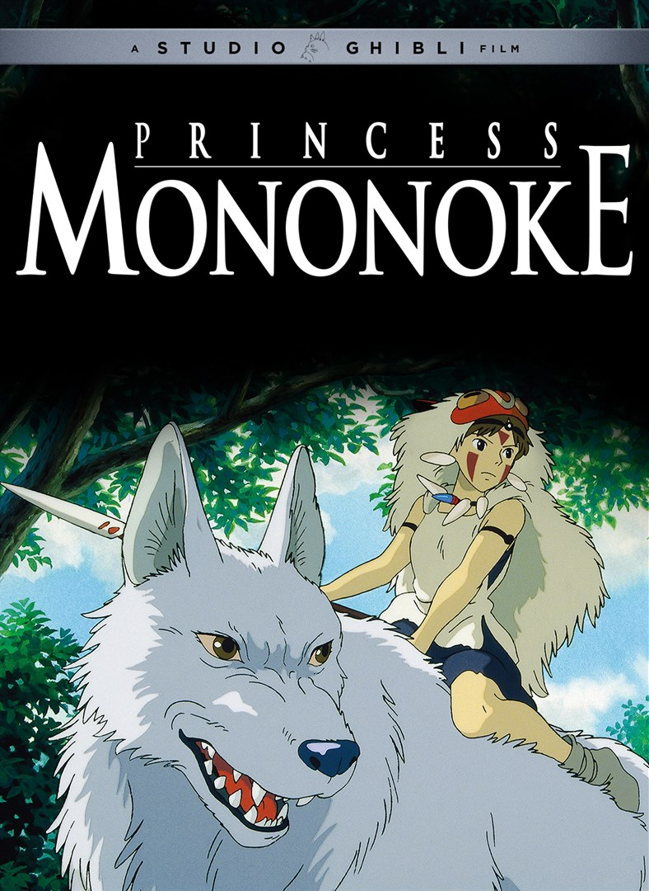
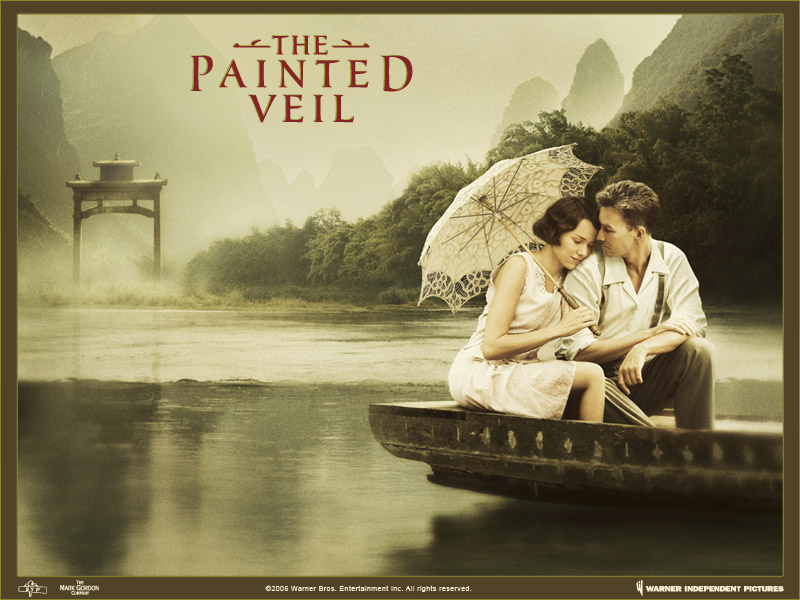

The top 3 movies according to Evi
A nice way to fell better in a stresfull week
Princess Mononoke
Princess Mononoke is a visually stunning and emotionally powerful film
with a complex and timely message.
It is one of the best animated films ever made,
and a must-see for fans of cinema.
Frozen 2
 Frozen 2 is a great sequel with stunning animation, wonderful songs,
and complex characters. It's a must-see for fans of the
first film and anyone who loves a good animated story.
Frozen 2 is a great sequel with stunning animation, wonderful songs,
and complex characters. It's a must-see for fans of the
first film and anyone who loves a good animated story.
The Painted Veil
John Curran's "The Painted Veil" is a visually stunning and emotionally
resonant film about a couple's journey of self-discovery and
redemption in remote China. Naomi Watts and Edward Norton give
outstanding performances as the couple, who learn to respect and
love each other as they face challenging circumstances. Curran's
masterful direction and the film's beautiful cinematography and
soundtrack make it a must-see for fans of period dramas and
love stories.